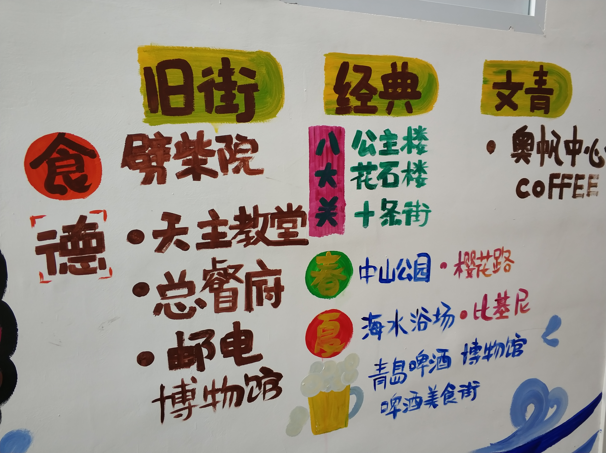

游玩功略一：栈桥->小青岛->德国老建筑（天主教堂、基督教堂）->中山公园->八大关风景名胜区->第一海水浴场->五四广场->奥林匹克帆船中心
这条线路有一个好处，就是相邻的景点很靠近，可以徒步前行，沿路还能欣赏青岛的城市风景。住宿不太推荐酒店，选择名宿足够了，价格实惠环境也好。还有一点 经过天主教堂的路上，会有一条小食街-劈柴院，如果你是一枚吃货，来这里就对了，你想要的，这里都有。

游玩功略二：老舍故居->天后宫->青岛海底世界（水族馆、海底世界、水木管）->海军博物馆->邮电博物馆->德国监狱旧址->小鱼山公园->信号山公园->青岛啤酒博物馆
这条线路主要是参观为主，主要集中在地铁附近，沿路还能欣赏青岛的独特的德式建筑群。登上小鱼山公园的览潮阁，能给你一种一览众山小既视感，何其壮观。 信号号山公园内的旋转观景楼是你去青岛必须来的地方，在旋转观景楼内你能够眺望整个青岛。青岛美色尽收眼下。到达青岛啤酒博物馆品一定要尝到青岛原浆啤酒、纯生啤酒，给你的青岛之旅完美收官。

青岛之旅打卡点


信号山地图、小鱼山地图